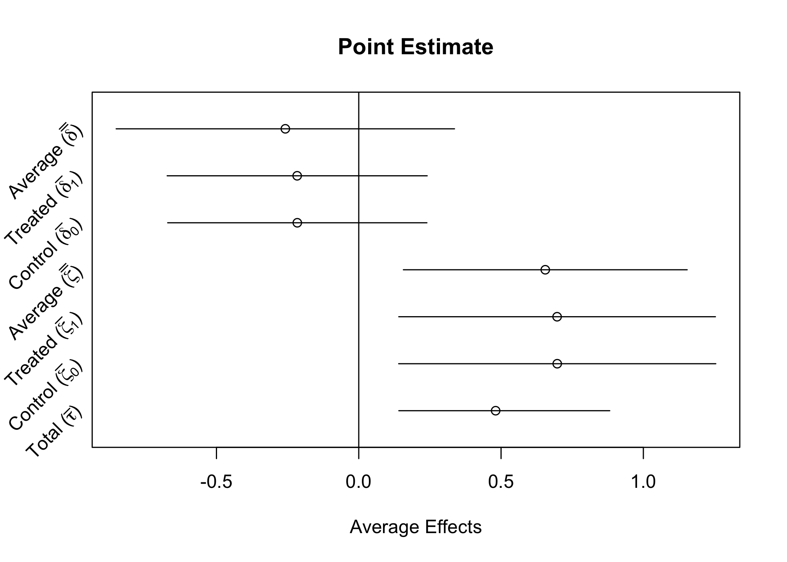
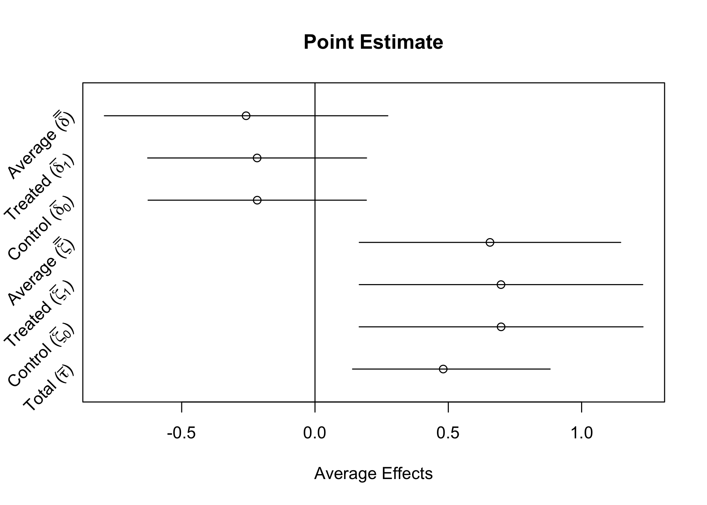

flowchart LR A[Market Cap] --> B[Efficacy] A --> C(Lobbying) --> B A --> D(PAC contributions) --> B A --> E(Technical Expertise) --> B A --> F(Legal Expertise) --> B
Mediation
FINREG
For Hypothesis 6, we’re focused on understanding the pathways of influence from wealth to efficicacy. The four paths we study are summarized in the stylized DAG in Figure 1.
Lobbying and PAC contributions are both forms of political spending that would influence the rulemaking process in a direct financial way. Technical expertise and legal expertise are both measured using dictionary techniques, looking at banking terms and legal citations, respectively. The expertise pathways each come from a sense that large companies employ experts who have meaningful advice to give to agencies, whether it be on finer points of the law or nuance in how regulations should be enforced to capture the correct behaviors.
Of course, money itself can influence the efficacy, if there is a portion of efficacy that is purely a function of wealth. For example, if attention was driven by the wealth of a company, then this might be a direct relationship from the market cap of the company to the efficacy of their comments.
To test the different pathways, we require some strong assumptions.
- There is a causal relationship from the market cap of a company to the efficacy of comments.
- The paths included in the analysis are the full enumeration of possible paths.
- The relationships can be described by linear models and binarized treatments.
None of these are necessarily crazy. We are, however, a bit technologically limited by what we can do with mediation in R. We can only fit two mediators at any time, but we have proposed four.
Combining the technical aspects of this with the limitations, we are doing the following:
- Knowingly violating assumption 2 of the causal mediation analysis by excluding possible measures.
- We could pick a subset and approach these by pairing. We probably would not want to include the other measures in the models, as they are post-treatment for our analyses.1
- We can also consider these mediators as two classes of influence, (1) political spending (PAC and lobbying) and (2) expertise (legal and technical). This is detailed below.
- We want to compare the sizes of the Average Causal Mediation Effects (ACME).
- To do this properly, we need the Total Effect (market cap \(\to\) efficacy; including mediated effects) to be constant.
- This means the fitted models need to be the same and include all mediators.
- Otherwise everything changes, including the unmediated Average Direct Effect (ADE) (market cap \(\to\) efficacy; no mediated effects).
- To do this properly, we need the Total Effect (market cap \(\to\) efficacy; including mediated effects) to be constant.
Testing Classes of Influence
Below demonstrates how we can view this as two classes of influence. Inferentially, I think this is consistent with a model where we think of expertise and spending as two quantities of interest, with each of the pathways as a measure of these classes. If that’s the “correct” way to think about it, then we can view the paths in Figure 1 as measures, rather than paths themselves. The alternative measures for each class could then be used as robustness checks.
Alternatively, we can say that spending is the simply the sum of spending through different sources. That is, if political spending is actually the pathway, then we want to know the total spending from a company on a rule, no matter the way that it is spent. In that case, we can reasonably use the sum of lobbying and PAC spending as our measure of political spending.
For expertise, there is not necessarily a clear theory behind why or how we would combine them. They are both clearly related to expertise, but there’s not a conversion rate between the types of expertise. We could do something like building an index, but then we probably lose all substantive interpretation. Instead, it seems reasonable to say that comments include signals of expertise and the two obvious ones are legal citations and technical banking terms.2 As such, we would pick one measure (technical banking terms) for the main text and present the other (legal citations) as a robustness analysis.
With that substantive grounding established, we now turn to the empirics of it all. We can express the classes interpretation as a stylized DAG as in Figure 2.
flowchart LR A[Market Cap] --> B[Efficacy] A --> C(Political Spending) --> B A --> D(Expertise) --> B
Now we fit and interpret the model.
Each model is a linear model, so we can run the components and first understand the basic relationships.
Code
mediation_data_comb <- mediation_data %>%
drop_na(
efficacy,
marketcap_b,
TotalLobbyingAmount,
TotalContribAmount,
dictionary_terms,
Total_Legal_Citations
) %>%
mutate(
political_spending = TotalContribAmount + TotalLobbyingAmount
)
model_comb_poli <- lm(political_spending ~ marketcap_b,
data = mediation_data_comb
)
model_comb_terms <- lm(dictionary_terms ~ marketcap_b,
data = mediation_data_comb
)
model_y_comb <- glm(
efficacy ~ marketcap_b + political_spending + dictionary_terms,
data = mediation_data_comb
)
models_comb <- list(model_comb_poli, model_comb_terms, model_y_comb)
rows <- tibble(
term = c('Dependent Variable'),
`1` = 'Political (PAC + LDA) Spending',
`2` = 'Technical Terms',
`3` = 'Efficacy'
)
attr(rows, 'position') <- c(0)
modelsummary(models_comb, rows = rows)| (1) | (2) | (3) | |
|---|---|---|---|
| Dependent Variable | Political (PAC + LDA) Spending | Technical Terms | Efficacy |
| Market Capitalization (Billions) | 160198.000*** | 5.241*** | −0.106 |
| (20246.113) | (1.180) | (0.133) | |
| political_spending | 0.000 | ||
| (0.000) | |||
| Technical Terms | 0.118*** | ||
| (0.006) | |||
| Num.Obs. | 283 | 283 | 283 |
| Log.Lik. | −5361.330 | −2602.061 | −1947.514 |
| + p < 0.1, * p < 0.05, ** p < 0.01, *** p < 0.001 |
Then, we can fit the more full model and summarize it.
Code
# multiple mediators
set.seed(02138)
med_multi_comb <- multimed(
outcome = 'efficacy',
med.main = 'political_spending',
med.alt = 'dictionary_terms',
treat = 'marketcap_b',
data = as.data.frame(mediation_data_comb),
sims = 5000
)
summary(med_multi_comb)
Causal Mediation Analysis with Confounding by an Alternative Mechanism
Estimates under the Homogeneous Interaction Assumption:
Estimate 95% CI Lower 95% CI Upper
ACME (treated) -0.216 -0.673 0.24
ACME (control) -0.216 -0.671 0.24
ACME (average) -0.258 -0.852 0.34
ADE (treated) 0.697 0.141 1.25
ADE (control) 0.697 0.140 1.25
ADE (average) 0.655 0.157 1.15
Total Effect 0.481 0.141 0.88
Sensitivity Analysis:
Values of the sensitivity parameters at which ACME first crosses zero:
sigma(bounds) sigma(CI) R2s(bounds) R2s(CI) R2t(bounds) R2t(CI)
ACME (treated) NA 0 NA 0 NA 0
ACME (control) NA 0 NA 0 NA 0
ACME (average) NA 0 NA 0 NA 0
Values of the sensitivity parameters at which ADE first crosses zero:
sigma(bounds) sigma(CI) R2s(bounds) R2s(CI) R2t(bounds) R2t(CI)
ADE (treated) NA NA NA NA NA NA
ADE (control) NA NA NA NA NA NA
ADE (average) NA NA NA NA NA NA\(\delta\) corresponds to the first mediator, here political spending, and \(\zeta\) corresponds to expertise via technical terms. Effect sizes are increases in efficacy per billion dollar market cap.3
Code
plot(med_multi_comb, type = 'point')
Testing Pathways of Influence
As before, we can fit the same models, but not aggregate the spending, if we want to test this as a four path approach. Here, we look at one pairing, PAC contributions and technical terms. This is most similar to what is currently done in the paper, up to the exclusion of variables in the model. This tries to fix the causal ordering problem, but causes issues in interpretation for how the underlying models are changing.
Code
model_path_cont <- lm(TotalContribAmount ~ marketcap_b,
data = mediation_data_comb
)
model_path_terms <- lm(dictionary_terms ~ marketcap_b,
data = mediation_data_comb
)
model_y_path <- glm(
efficacy ~ marketcap_b + TotalContribAmount + dictionary_terms,
data = mediation_data_comb
)
models_path <- list(model_path_cont, model_path_terms, model_y_path)
rows <- tibble(
term = c('Dependent Variable'),
`1` = 'PAC Contributions',
`2` = 'Technical Terms',
`3` = 'Efficacy'
)
attr(rows, 'position') <- c(0)
modelsummary(models_path, rows = rows)| (1) | (2) | (3) | |
|---|---|---|---|
| Dependent Variable | PAC Contributions | Technical Terms | Efficacy |
| Market Capitalization (Billions) | 112070.610*** | 5.241*** | −0.101 |
| (15831.772) | (1.180) | (0.131) | |
| PAC Donations | 0.000 | ||
| (0.000) | |||
| Technical Terms | 0.118*** | ||
| (0.006) | |||
| Num.Obs. | 283 | 283 | 283 |
| Log.Lik. | −5291.728 | −2602.061 | −1947.409 |
| + p < 0.1, * p < 0.05, ** p < 0.01, *** p < 0.001 |
Again, we can fit the more full model and summarize it.
Code
# multiple mediators
set.seed(02138)
med_multi_path <- multimed(
outcome = 'efficacy',
med.main = 'TotalContribAmount',
med.alt = 'dictionary_terms',
treat = 'marketcap_b',
data = as.data.frame(mediation_data_comb),
sims = 5000
)
summary(med_multi_path)
Causal Mediation Analysis with Confounding by an Alternative Mechanism
Estimates under the Homogeneous Interaction Assumption:
Estimate 95% CI Lower 95% CI Upper
ACME (treated) -0.217 -0.628 0.19
ACME (control) -0.217 -0.626 0.19
ACME (average) -0.258 -0.790 0.27
ADE (treated) 0.698 0.166 1.23
ADE (control) 0.698 0.166 1.23
ADE (average) 0.656 0.166 1.15
Total Effect 0.481 0.141 0.88
Sensitivity Analysis:
Values of the sensitivity parameters at which ACME first crosses zero:
sigma(bounds) sigma(CI) R2s(bounds) R2s(CI) R2t(bounds) R2t(CI)
ACME (treated) NA 0 NA 0 NA 0
ACME (control) NA 0 NA 0 NA 0
ACME (average) NA 0 NA 0 NA 0
Values of the sensitivity parameters at which ADE first crosses zero:
sigma(bounds) sigma(CI) R2s(bounds) R2s(CI) R2t(bounds) R2t(CI)
ADE (treated) NA NA NA NA NA NA
ADE (control) NA NA NA NA NA NA
ADE (average) NA NA NA NA NA NAWe can graphically display this as well. \(\delta\) corresponds to the first mediator, now total PAC spending, and \(\zeta\) corresponds to expertise via technical terms. Effect sizes are increases in efficacy per billion dollar market cap.
Code
plot(med_multi_path, type = 'point')
Takeways
- This is tricky! Causal mediation is the right tool probably, but the assumptions to get there are strong and we knowingly break them under some theories.
- Results are pretty consistent across multiple ways of setting up the problem.